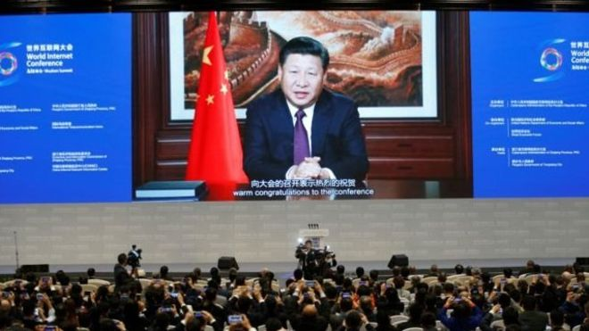

英媒：中国要彻底封锁VPN翻墙软件了？
文章来源:http://www.bbc.com/zhongwen/simp/press-review-40580679
发稿日期:2017/7/12

习近平在互联网大会上的发言 (REUTERS)
《泰晤士报》星期三（7月12日）报道，中国再次加强网络管理，将彻底封锁互联网用户使用的VPN翻墙软件。
文章说，中国政府将封锁任何他们认为不适当的内容，让中国国内的用户无法接触它们。
据悉，在中国大约7亿网民中，有30%即，大约2亿网民经常使用VPN翻墙软件，以阅读在国内被屏蔽的内容，包括像脸书和推特等社交媒体内容。
同时，这部分网民也依赖VPN来接触在国内看不到的新闻以及与中国政府不同的声音。
中国还给出了一个期限，让那些互联网服务器供应商最晚在2018年2月要阻断任何使用VPN的个人用户。
但文章说，中国此举并不可能彻底摧毁VPN， 因为许多中国用户使用的是国外的VPN翻墙软件，要想完全压制也不是那么容易。
为“十九大”做准备
《卫报》说，中国是世界上最大的网络审查和监控国家。 (GETTY IMAGES)
《卫报》昨天也报道了这一消息。文章说，中国是世界上最大的网络审查和监控国家。
中国这样做是为今年秋季在北京召开的“十九大”做准备。
文章引用在美国加利福尼亚的一名专家的话说，这是中国网控进一步升级的重要迹象，且表明中国高层对互联网管控感到前所未有的紧迫和绝望。
同时，这也显示了中国最高层的政治斗争以及不同的派系之间利用互联网作为“战场”。
该专家还预测，在未来的一段时间，中国当局还会进一步加紧整顿互联网的措施，这将使中国对互联网的控制提升到另一个高度。
文章说，中国对VPN的控制不但影响个人用户，对中国科研人员、学者以及外国在华公司都会产生不利影响。